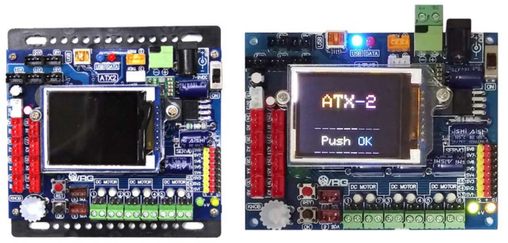

Chapter 1
ATX2 controller board overview
ATX2 is one important part of the Robo-Creator2 robot kit. This chapter introduces about technical information of the ATX2 controller board. It is base knowledge for using to make the autonomous robot such as Sumo-BOT, Fire fighting robot, Line tracking robot, All- terrain robot. By connecting with wireless communication module such as RF module, Bluetooth module and WiFi module we can adapt to control robot wirelessly by using smartphone, tablet and computer.
Moreover this ATX2 controller board is recommended for making the robot for World Robot Games competition.

Programming development of the ATX2 controller board uses C/C++ language in the open source software are named Arduino (www.arduino.cc). Free download the customize Arduino software for the ATX2 and Robo-Creator2 at www.inexglobal.com.
ATX2 controller board is next generation of INEX’s ATX board that have developed since 2012. The new version ATX2 board is able to drive 6 of DC motors and 8 of Servo motors together. It has many ports for interfacing with both digital and analog sensors, basic digital output port and using the data communication via 2 lined bus system called I2C bus and the standard UART serial bus. The improved feature of new version is the Color Graphic LCD (GLCD). It helps user to monitor the status, shows text and simple graphic in color.
In this section
Original manual, page 5